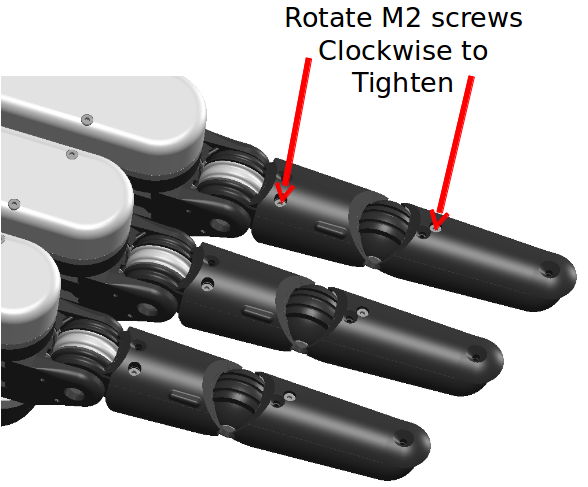

Cable Tensioning
There are two mechanical cable circuits in the finger: one for the proximal phalange and one for the distal phalange. They have been tensioned after burn-in during manufacturing, but after extended or harsh usage, the cables will likely stretch somewhat and require occasional tensioning.
The following rendering shows the location of the tensioning screws. Note that it is not necessary to remove any finger caps to access them, as there are holes in the caps to permit access to the tensioning screws:

The idea of the tensioning process is to remove slack in the cables. It is not good to add significant preload to the cables, as significant preload tension will reduce the amount of force which the cable drive mechanism can exert before failing.
Note that even with the cables optimally tensioned, there will likely remain approximately 10mm of backlash at the tip of the fingernail. This is due to the inherent backlash in the low-cost gearheads, not to the cable drives.
To take up any slack in the cable drives, it is suggested to hold onto the "short" arm of an Allen key and gently turn the tensioning bolt clockwise. Do not create a big moment arm with the "long" arm of the Allen key and crank hard, as this can create enough force to snap the cable. The idea of this process is to take up any slack in the cable, not to create internal tension.